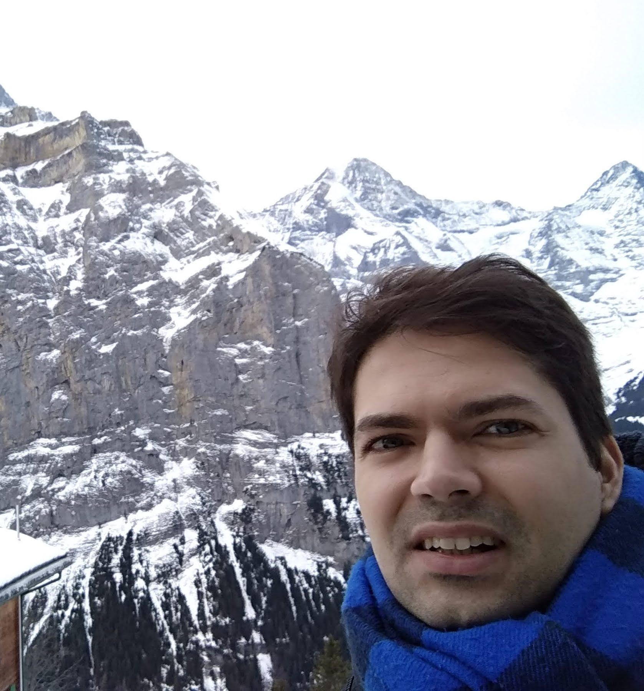
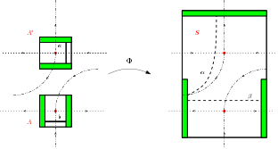
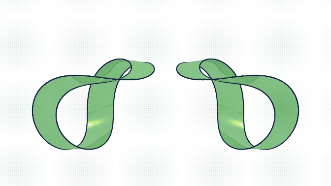
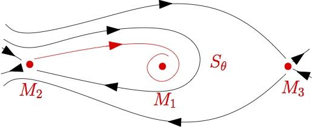

 |
Ewerton Rocha Vieira Universidade Federal de Goiás Campus Samambaia Fone: +55 62 3521 1208 |
Research interests:
My research goals are focused on the use of topology, algebraic topology and dynamical systems to understand and obtain information from time varying systems (flows, differential equations and continuous maps).
https://github.com/Ewerton-Vieira/ewerton-vieira.github.io/blob/master/CV.pdfHere you can find my Curriculum Vitae CV and curriculum lattes.
Complex Dynamics Conley Index Theory

Algebraic Topology Dynamical Systems
 
Conley Index Theory:
Franzosa, R.; de Rezende, K. A.; Vieira, E.R. Generalized Topological Transition Matrix. Topol. Methods Nonlinear Anal. 48 (2016), no. 1, 183-212.
Franzosa, R.; Vieira, E.R. Transition matrix theory. Transactions of the American Society, v. 369, p. 7737, 2017.
Non-abelian tensor product applied to algebraic topology:
Bastos, R., Rocco, N.R., Vieira, E.R. Finiteness of homotopy groups related to the non-abelian tensor product, Annali di Matematica Pura ed Applicata- 1923 (2019).